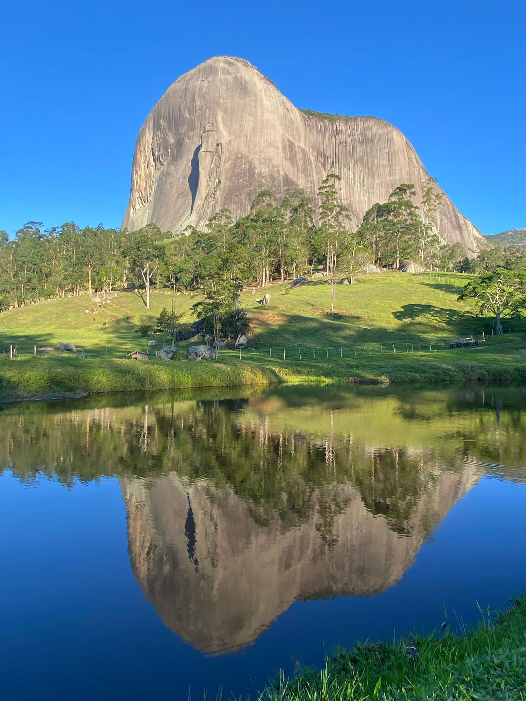
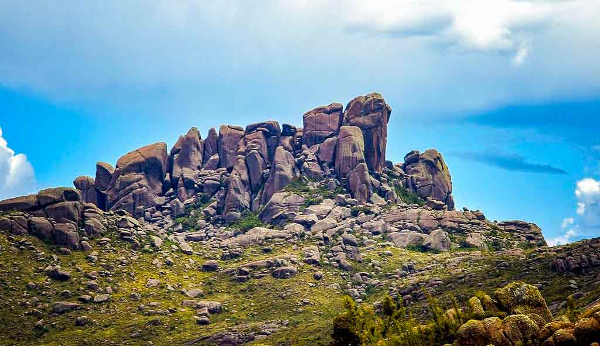
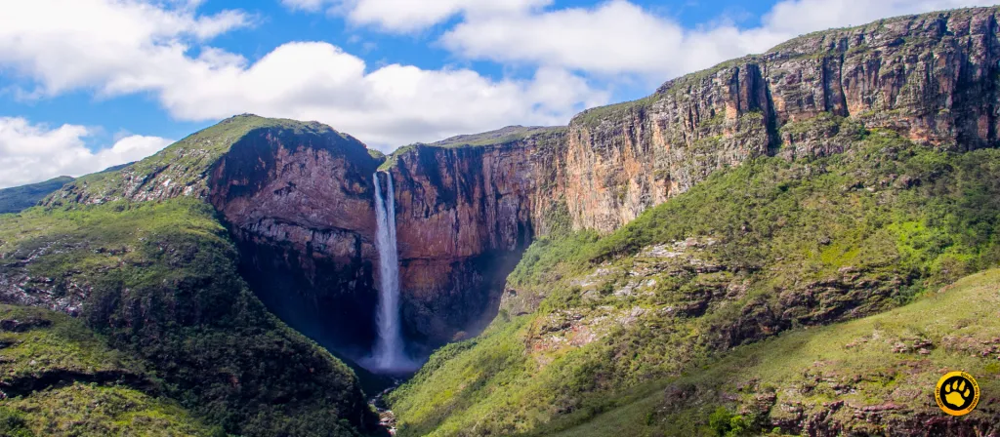
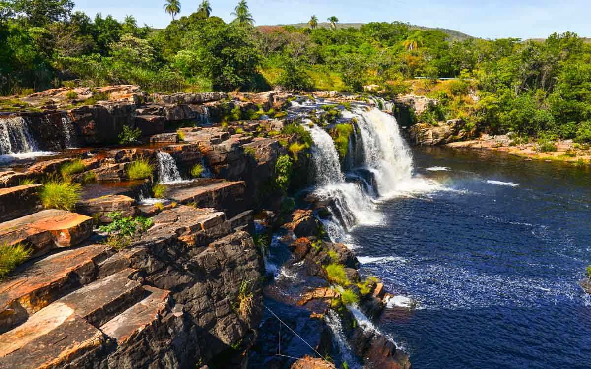

Sudeste
O Sudeste do Brasil é uma tapeçaria de contrastes, onde a efervescência das grandes cidades se encontra com paisagens naturais de tirar o fôlego. Além de seus ícones urbanos, a região revela um interior montanhoso repleto de cachoeiras, vales exuberantes e formações rochosas milenares. Do litoral recortado à altitude das serras, o Sudeste oferece uma diversidade natural que convida tanto à aventura quanto ao refúgio e à contemplação.
Parque Estadual da Pedra Azul
No coração das montanhas capixabas, o Parque Estadual da Pedra Azul é o lar de uma das belezas mais singulares do Espírito Santo: a imponente Pedra Azul. Essa formação rochosa de granito muda de cor ao longo do dia, variando do azul-claro ao violeta intenso sob a luz do sol. O parque oferece trilhas que levam a piscinas naturais e vistas espetaculares da Mata Atlântica de altitude, um verdadeiro espetáculo de cores e natureza.

.png)
Serra da Mantiqueira
A Serra da Mantiqueira, conhecida como a "Serra que Chora" devido à abundância de suas nascentes, é um complexo montanhoso que se estende por São Paulo, Minas Gerais e Rio de Janeiro. Com picos imponentes, vales profundos, florestas de araucárias e cachoeiras, a Mantiqueira é um paraíso para o ecoturismo e o agroturismo. Suas paisagens se transformam a cada estação, oferecendo refúgio e vistas panorâmicas que inspiram tranquilidade e aventura.


Serra do Cipo
Em Minas Gerais, a Serra do Cipó é um paraíso de águas cristalinas e formações rochosas impressionantes. Parte da grandiosa Cadeia do Espinhaço, a região é pontilhada por cânions, rios e inúmeras cachoeiras espetaculares, como a Cachoeira Grande. Suas trilhas levam a mirantes com vistas deslumbrantes do cerrado e campos rupestres, convidando à exploração e ao contato profundo com a natureza selvagem mineira.

